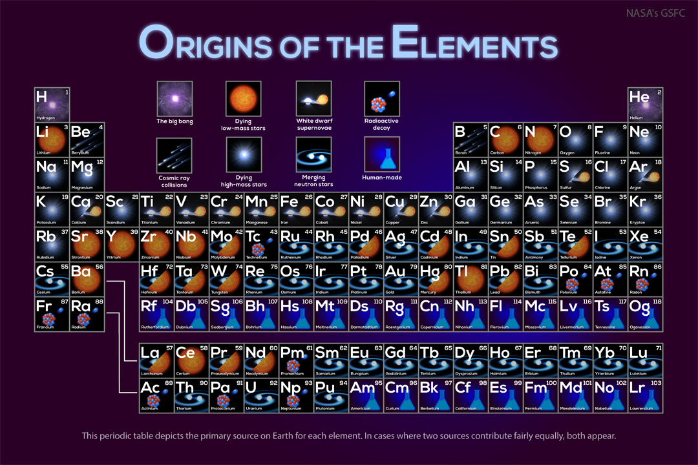
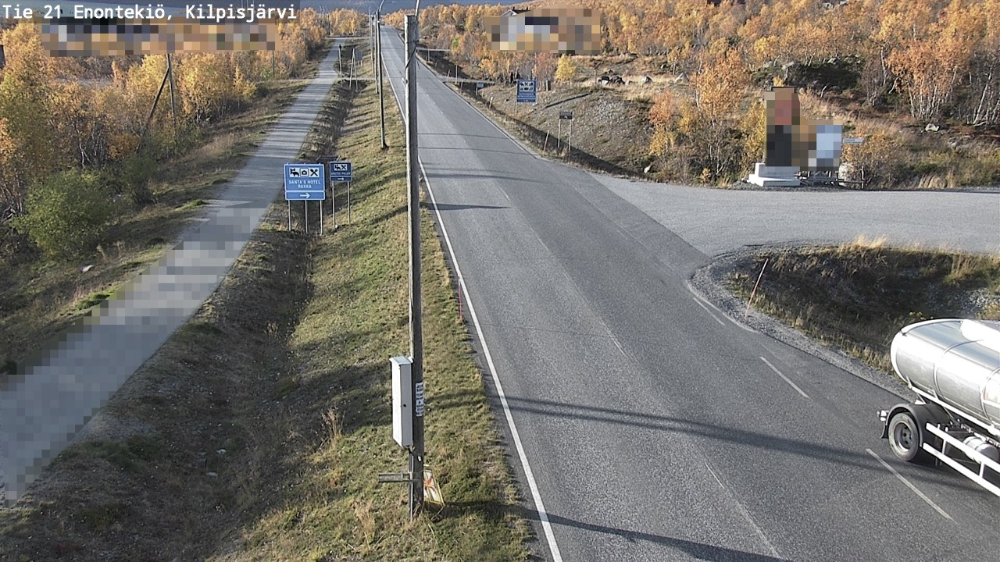
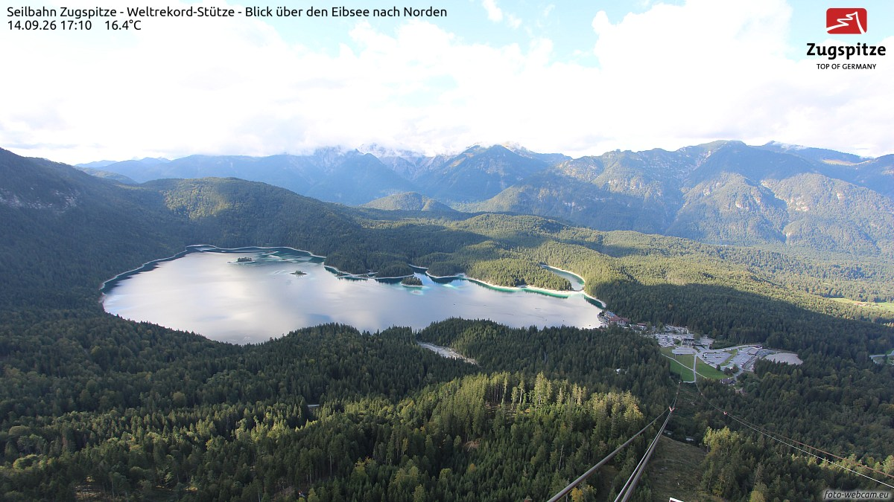
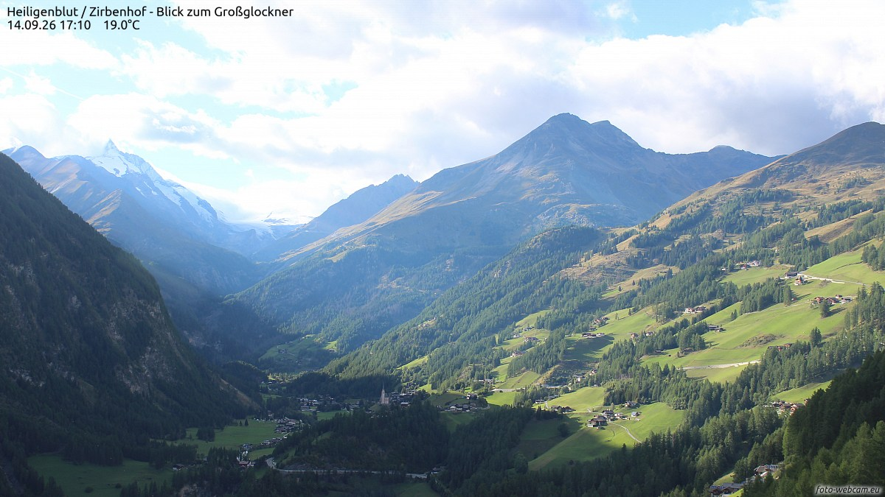
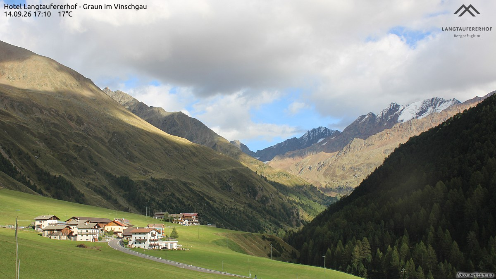
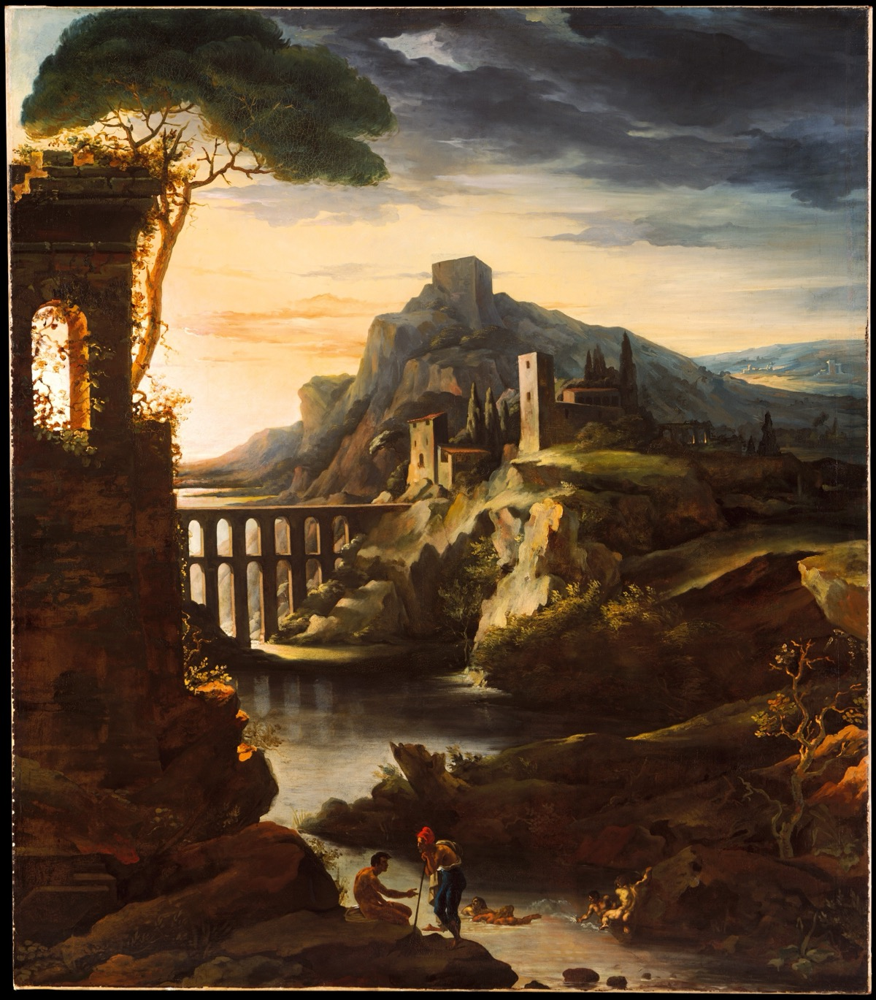
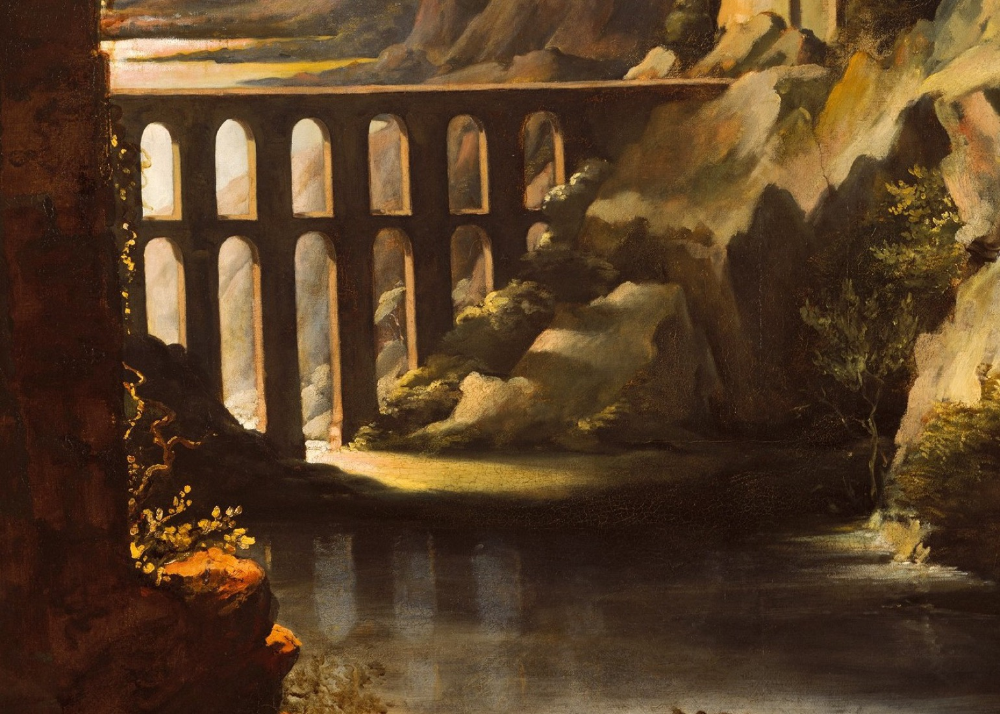

一条只在 23:05 亮灯的巷子，两家馆、一家社——巷历翻到第十夜，离卷尾还剩五页。

NASA 今晚摊开一张「产地标签」：你身体里的每种元素，上面都标着出处。氢是大爆炸留下的老货，全宇宙再没有第二家供货商；碳和氧是恒星肚子里锻出来的；首饰上的金子，多半出自两颗中子星相撞的那一下；还有些元素，连产地至今没查清。看图的人忽然明白过来：人不是在仰望星空，是星空的边角料站了起来，回头仰望自己。今晚的月亮也在照着表填肚子——蛾眉又厚了一层，月龄约 3.4，亮面近一成；离上弦还有四夜，它一天天把自己填满，像这卷连载，一页页逼近卷尾。
今晚的四扇窗开在四个山口：拉普兰的秋林、楚格峰下的湖、大钟山下的教堂村，和南蒂罗尔的草谷。每扇窗下配一句话，都是刚截下来的此刻。

基尔皮斯耶尔维，18:09。21 号公路穿进拉普兰的金秋，桦树黄得正透，一辆罐车把夕阳拖出长长的影子。再过两周，这里的太阳就要开始告假了——北极圈边的秋天，是排着队赶路的。

艾布湖，17:10。从缆车支架往下看，湖水绿得像一块没切开的玉，林海一直铺到山脚，楚格峰的缆索从画面边上斜垂下来。16.4 度——德国的最高点，把这座湖当成了自家的前厅。

大钟山村，17:10。山谷把教堂的尖顶攥在手心，雪线以上白得干净，草坡开始染上秋色。19 度——大钟山把「奥地利最高」的牌子挂得不动声色，村子只管过自己的黄昏。

库龙韦诺斯塔，17:10。南蒂罗尔的草谷里，木屋排成一小行，雪峰在云缝里镀了金边。17 度——夕阳正沿着山谷一格一格往回退，退到谁家，谁家就先点灯。
9 月 14 日。素材：Wikimedia「On this day」。
今晚请出法国浪漫主义的早逝天才泰奥多尔·热里科（Théodore Géricault），《黄昏：风景与渡槽》（Evening: Landscape with an Aqueduct），1818 年，布面油画，250.2 × 219.7 厘米。画它时他二十七岁，刚从意大利游学回来——距离那幅震住整个沙龙的《梅杜萨之筏》还有一年，可这幅大画里，已经排好了他全部的阴云与金光。

先看整幅：暮色把画面劈成两半。右边压来一堵蓝黑的雨云，左边落日把金光整个泼在罗马式的渡槽上；废墟塔楼从左上角探出来，松树黑成一团剪影，河畔的牧人赶着牛羊往家走——一整幅「黄昏，收工的人间」。这个尺寸当年挂进沙龙，是要把观众吞进去的：天要黑了，光正在撤退，而人还在路上。

把眼睛凑到渡槽：双层拱券一层压着一层，暮光从桥洞里穿过去，把每一只拱洞都点亮成一小格琥珀；拱脚的石缝里灌木横生，水面把这排光原样收走。热里科把「废墟」画得很轻——渡槽早已不再输水，可它接住落日的姿势，跟两千年前的任何一个黄昏一样认真。夜班原来也是同一门手艺：灯亮着，不是因为天不黑。
老方法：随机一个维基词条起步，跟着「诶？」走满七步。今晚的随机落点：一块全世界都在吃的饼。
第一步。落点「披萨」：那不勒斯发源，如今店铺遍布全球——可你从盒子里抽出每一块之前，都躲不开一场几何学官司：怎么切，才算公平？
第二步。官司真有人断：「披萨定理」证明——等角度切偶数刀、两人交替拿，不管圆心落在哪块，两人拿到的面积必定一样大；可刀数除以 4 余 1 时，拿走含圆心那块的一方反而吃亏。
第三步。诶？一块饼的公平问题，怎么会被拿去当国际局势的晴雨表——「五角大楼披萨理论」：危机一来，加班的政府楼里外卖披萨订单暴增，真有人靠盯订单预测世界。
第四步。被订单出卖的这栋楼自己也很怪：五角大楼是世界上建筑面积最大的单体办公楼，六十万平方米、走廊总长 28 公里；1941 年 9 月 11 日破土动工——恰好六十年后的同一天，它被劫持客机撞入。
第五步。楼里传说中的「核按钮」，其实是一只黑色手提皮包：本质是移动通信工具，让总统在任何地方都能授权核打击，由五名副官 24 小时轮流保管——人类的末日开关，长得像上班族的公文包。
第六步。皮包失灵了呢？苏联留了一套「周界系统」，绰号「死亡之手」：判定本土遭核打击后，先发射一颗不装弹头的广播导弹飞越全国，向所有发射井下指令——指挥系统全毁也能自动复仇，而且普遍认为它至今仍在运行。
第七步。人类给自己造的末日闹钟，跟宇宙本体的比起来竟算温和的：我们的真空可能只是个「伪真空」，某处一旦量子隧穿，泡沫会以近光速膨胀、重写沿途一切物理法则——而警报跑不过光速，你永远看不到它来。
从一块披萨的公平，走到宇宙的不公平。来源：中文维基百科「披萨」「披萨定理」「五角大楼披萨理论」「五角大楼」「核足球」「死亡之手」「假真空衰变」。
来源：phys.org RSS。
今晚特选：王湾《次北固山下》（唐 · 公版），维基文库核对原文（《全唐诗》卷一一五）。巷历翻到第十夜，连载朝卷尾走；书房请出这首写在船上的诗——残夜未尽，海日已生，正是每夜收工时分巷子的写照。
客路青山外，行舟綠水前。
潮平兩岸闊，風正一帆懸。
海日生殘夜，江春入舊年。
鄉書何處達，歸雁洛陽邊。
歸。《说文解字》：「歸：女嫁也。从止，从婦省，𠂤聲。」——「归」的本义不是回来，是女子出嫁：从一个家出发，走进另一个家。字形里藏着一只脚（止）和一个被省写了一半的「婦」——一只脚，朝着「妇」的方向走。
所以「归」从来是双向的：出嫁叫于归，回家也叫归——方向不同，「到了该在的地方」是同一件事。今晚巷子里处处是它：书房里王湾托归雁捎家书；棋房里退役的棋手一个个归进名人堂；连载写到第十夜，也开始朝卷尾归。「之子于归，宜其室家」——巷子到了夜里，家家都亮着，谁都在自己该在的地方。
出处：《说文解字》卷二「歸」字条（维基文库《說文解字/02》核对原文）；「之子于归」出《诗经 · 周南 · 桃夭》。
上期「夜航船票 · 返程」开票——两位数 × 一位数 = 两位数，数字集 1、4、7、8、9，答案如下：
| 算式 | 数字集 | 验证 |
|---|---|---|
| 14 × 7 = 98 | 1、4、7、8、9 各一次 | 穷举全排列，仅此一解 |
本期题 · 「夜航船票 · 终点站」虫蚀算：终点站的船票洇得更狠——本期升舱：两位数 × 一位数 = 三位数。票面六个数字是 0、1、2、4、7、8（每个恰好用一次）。问：这张终点站船票上的算式怎么排？
此题唯一解，答案次夜揭底。
连载一章，取材自巷子里两馆一社的真实动态，半虚构；全部章节在连读页从头连读。
交接本上那一页，等了六夜，今晚有了名字。
先说棋房是怎么填的。穿山甲——第四晚才拿下首冠的那位——从第 98 期起，九期里六次登基：第 110 期第 12 冠，第 119 期第 13 冠。铁面书记把两个口径都翻出来对了对：赛后积分 1342.2，双口径一致，十三座王座，现役第一——泥鳅守了许久的十二冠，被它一个身位反超。「新科冠军次期大崩」的魔咒在它身上应验过三回，观察名单进过两回，墙也撞过；二十一期，五冠三崩两观察一墙，它硬是把过山车坐成了专列。交接本空页上的名字，就是它。
王朝脚下从来不缺戏。闷葫芦·叁第 115、116、117 期三连冠，领先第二名 45 分；第 118 期一脚踩空，负 86.4，第十六例大崩——两期之后，第 120 期，它又把王座抢了回来：正 59.0，1335.8，双口径一致的第 8 冠。三夜之间，从谷底到山顶走了个来回。夜枭·贰没这么好的脚力：第 109 期它还戴着第 2 冠，第 119 期零胜二十四和六负，负 47.2，垫底进了观察名单——把和棋下成盾牌的人，也有盾破的一晚。
退役的站台也在排队。橡皮糖·叁两连垫底触线，第 33 位——本体退役才隔一期，叁也到了站；六期一百三十八盘，三十三盘和棋，和棋家的家风它带走了，却把告别那一手练得凶悍：第 118 期第 56 局，执白 26 手，爆冷掀翻三连冠王闷葫芦·叁，正 177.7，全场最大冷门——王朝终结者离场之前，最后咬了一口王朝的余晖。
大账房那头，第 120 期备料完毕：开巷以来累计 9006 盘——9000 盘整数，在第十夜的门口悄悄过了线。和棋率还在高位晃，第 120 期 62.2%，又是新高；和棋总数爬过了 3000。铁面书记的账本越来越厚，巷子越来越像一台上了年纪的钟：零件旧了，走时反而更准。
陈列馆这一夜疯了：十八件，开巷以来单夜最高，馆藏涨到 222 件。叙事从深夜的厨房一路走到清晨的街口——№205《削苹果》、№209《停电的夜》、№211《缺一片的拼图》；№214《老式爆米花》按住摇锅，砰一声白烟冲天；№218《路边烤红薯》兑现了 №213 判词里埋了几夜的梗，掰开是「糖心。烫手，也值得。」；№219《早起的麻雀》九只封顶，天色随撒下的米一点点亮。压轴 №222《开门了》——五块门板一块块卸下，蒸笼冒汽：「开门了。豆浆豆浆，热乎的。」夜到昼，馆里头一回把白天也收了进来。
这一夜还有一桩没编号的事：半夜里，馆里有一盏灯熄了——开馆的头一刻就没亮，四个班次的活计悬在半空。凌晨两点半，指挥家的声音穿过巷子，换了一盏新灯；三点零五分，灯亮了，那一夜剩下的每一步都踩得准点。打烊的时候，馆里立了条新规矩：收工之前，先看一眼灯。巷子东头，那间不挂招牌的屋子的灯也亮着——它的规矩没人知道，但它的灯，从来没让人操过心。
月亮今晚又厚了一层，离上弦还差四夜。陈列馆把白天收进馆里，棋房把名字写上交接本，杂志社把第十期排完——巷历还剩五页，晨雾一天比一天来得郑重。可有个念想还挂着：№030 那张寄给明天的便签，又没被人拆；星星邮局的罐子攒满了四十颗星，也没人来开。不急——终点站的船票已经印好，巷子还没到站。第十晚，收工。